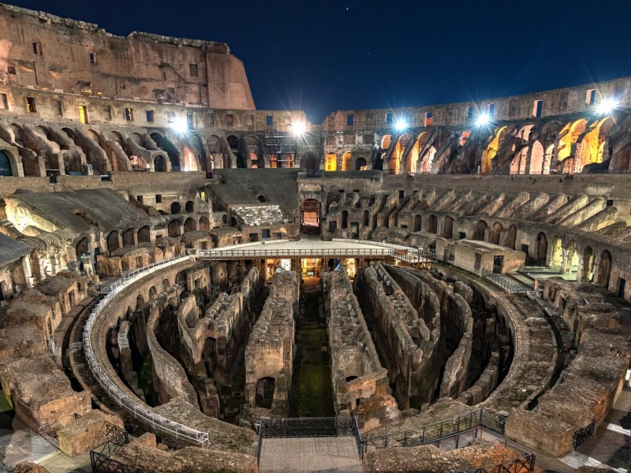
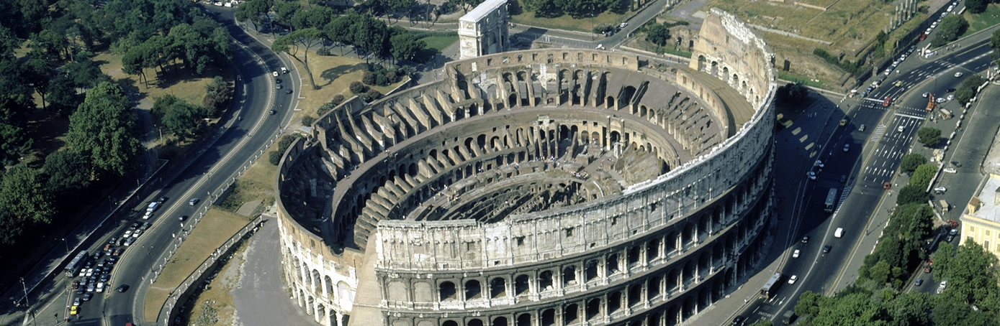

הקוֹלוֹסֵיאוּם (בלטינית: Amphitheatrum Flavium או Colosseum; באיטלקית: Colosseo) הוא אמפיתיאטרון אליפטי בנוי מבטון ואבן, שנמצא במרכז רומא שבאיטליה. הקולוסיאום הוא האמפיתיאטרון הגדול ביותר שנבנה אי פעם, ונחשב בימיו וגם כיום לאחת מהיצירות הגדולות של ההנדסה והאדריכלות הרומית. הקולוסיאום שוכן ממזרח לפורום הרומאי. בנייתו החלה על ידי הקיסר אספסיאנוס בשנת 70 לספירה והושלמה בשנת 80 לספירה בידי בנו הקיסר טיטוס, שיפוצים נוספים נעשו בידי הקיסר דומיטיאנוס - כולם קיסרי השושלת הפלאבית ששלטה ברומא במאה ה-1 לספירה. לפיכך שמו הרשמי של הקולוסיאום הוא "האמפיתיאטרון הפלאבי" (Amphitheatrum Flavium). על פי הערכות, מספר הצופים המרבי בקולוסיאום היה בין 50,000 ל-80,000, והוא שימש לתחרויות גלדיאטורים ותצוגות קרב כגון קרבות ימיים, מסעות ציד, הוצאות להורג, שחזורי קרב היסטוריים ודרמות מיתולוגיות. המבנה חדל לשמש כמוקד בידור בראשית ימי הביניים ונעשו בו שימושים שונים כגון: דיור, סדנאות, מסדרים דתיים, מבצר, מחצבה ועוד. אף שבמהלך השנים נהרס חלק גדול מהקולוסיאום בשל רעידות אדמה הרסניות ושוד עתיקות, הקולוסיאום מהווה סמל בלתי רשמי של העיר רומא ושל קיסרות רומא. זהו אחד מאתרי התיירות הפופולריים ביותר בעיר רומא ובעל קשרים הדוקים עם הכנסייה הקתולית והאפיפיור. בשנת 1980 נרשם כאתר מורשת עולמית של ארגון אונסק"ו, וב-7 ביולי 2007 נבחר כאחד משבעת פלאי תבל החדשים
|  |  |